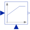

LimPIDP, PI, PD, and PID controller with limited output, anti-windup compensation, setpoint weighting and optional feed-forward |

|
Diagram
{kind=link}
Information
This information is part of the Modelica Standard Library maintained by the Modelica Association.
Via parameter controllerType either P, PI, PD, or PID can be selected. If, e.g., PI is selected, all components belonging to the D-part are removed from the block (via conditional declarations). The example model Modelica.Blocks.Examples.PID_Controller demonstrates the usage of this controller. Several practical aspects of PID controller design are incorporated according to chapter 3 of the book:
- Åström K.J., and Hägglund T.:
- PID Controllers: Theory, Design, and Tuning. Instrument Society of America, 2nd edition, 1995.
Besides the additive proportional, integral and derivative part of this controller, the following features are present:
- The output of this controller is limited. If the controller is in its limits, anti-windup compensation is activated to drive the integrator state to zero.
- The high-frequency gain of the derivative part is limited to avoid excessive amplification of measurement noise.
- Setpoint weighting is present, which allows to weight the setpoint in the proportional and the derivative part independently from the measurement. The controller will respond to load disturbances and measurement noise independently of this setting (parameters wp, wd). However, setpoint changes will depend on this setting. For example, it is useful to set the setpoint weight wd for the derivative part to zero, if steps may occur in the setpoint signal.
- Optional feed-forward. It is possible to add a feed-forward signal. The feed-forward signal is added before limitation.
The parameters of the controller can be manually adjusted by performing simulations of the closed loop system (= controller + plant connected together) and using the following strategy:
- Set very large limits, e.g., yMax = Modelica.Constants.inf
- Select a P-controller and manually enlarge parameter k (the total gain of the controller) until the closed-loop response cannot be improved any more.
- Select a PI-controller and manually adjust parameters k and Ti (the time constant of the integrator). The first value of Ti can be selected, such that it is in the order of the time constant of the oscillations occurring with the P-controller. If, e.g., vibrations in the order of T=10 ms occur in the previous step, start with Ti=0.01 s.
- If you want to make the reaction of the control loop faster (but probably less robust against disturbances and measurement noise) select a PID-Controller and manually adjust parameters k, Ti, Td (time constant of derivative block).
- Set the limits yMax and yMin according to your specification.
- Perform simulations such that the output of the PID controller goes in its limits. Tune Ni (Ni*Ti is the time constant of the anti-windup compensation) such that the input to the limiter block (= limiter.u) goes quickly enough back to its limits. If Ni is decreased, this happens faster. If Ni=infinity, the anti-windup compensation is switched off and the controller works bad.
Initialization
This block can be initialized in different ways controlled by parameter initType. The possible values of initType are defined in Modelica.Blocks.Types.InitPID. This type is identical to Types.Init, with the only exception that the additional option DoNotUse_InitialIntegratorState is added for backward compatibility reasons (= integrator is initialized with InitialState whereas differential part is initialized with NoInit which was the initialization in version 2.2 of the Modelica standard library).
Based on the setting of initType, the integrator (I) and derivative (D) blocks inside the PID controller are initialized according to the following table:
| initType | I.initType | D.initType |
| NoInit | NoInit | NoInit |
| SteadyState | SteadyState | SteadyState |
| InitialState | InitialState | InitialState |
| InitialOutput and initial equation: y = y_start |
NoInit | SteadyState |
| DoNotUse_InitialIntegratorState | InitialState | NoInit |
In many cases, the most useful initial condition is SteadyState because initial transients are then no longer present. If initType = InitPID.SteadyState, then in some cases difficulties might occur. The reason is the equation of the integrator:
der(y) = k*u;
The steady state equation "der(x)=0" leads to the condition that the input u to the integrator is zero. If the input u is already (directly or indirectly) defined by another initial condition, then the initialization problem is singular (has none or infinitely many solutions). This situation occurs often for mechanical systems, where, e.g., u = desiredSpeed - measuredSpeed and since speed is both a state and a derivative, it is natural to initialize it with zero. As sketched this is, however, not possible. The solution is to not initialize u_m or the variable that is used to compute u_m by an algebraic equation.
When initializing in steady-state, homotopy-based initialization can help the convergence of the solver, by using a simplified model a the beginning of the solution process. Different options are available.
- homotopyType=Linear (default): the limitations are removed from the simplified model, making it linear. Use this if you know that the controller will not be saturated at steady state.
- homotopyType=UpperLimit: if it is known a priori the controller will be stuck at the upper limit yMax, this option assumes y = yMax as a simplified model.
- homotopyType=LowerLimit: if it is known a priori the controller will be stuck at the lower limit yMin, this option assumes y = yMin as a simplified model.
- homotopyType=NoHomotopy: this option does not apply any simplification and keeps the limiter active throughout the homotopy transformation. Use this if it is unknown whether the controller is saturated or not at initialization and if the limitations on the output must be enforced throughout the entire homotopy transformation.
The parameter limitAtInit is obsolete since MSL 3.2.2 and only kept for backwards compatibility.
Parameters (19)
| controllerType |
Value: .Modelica.Blocks.Types.SimpleController.PID Type: SimpleController Description: Type of controller |
|---|---|
| k |
Value: 1 Type: Real Description: Gain of controller |
| Ti |
Value: 0.5 Type: Time (s) Description: Time constant of Integrator block |
| Td |
Value: 0.1 Type: Time (s) Description: Time constant of Derivative block |
| yMax |
Value: Type: Real Description: Upper limit of output |
| yMin |
Value: -yMax Type: Real Description: Lower limit of output |
| wp |
Value: 1 Type: Real Description: Set-point weight for Proportional block (0..1) |
| wd |
Value: 0 Type: Real Description: Set-point weight for Derivative block (0..1) |
| Ni |
Value: 0.9 Type: Real Description: Ni*Ti is time constant of anti-windup compensation |
| Nd |
Value: 10 Type: Real Description: The higher Nd, the more ideal the derivative block |
| withFeedForward |
Value: false Type: Boolean Description: Use feed-forward input? |
| kFF |
Value: 1 Type: Real Description: Gain of feed-forward input |
| initType |
Value: .Modelica.Blocks.Types.InitPID.DoNotUse_InitialIntegratorState Type: InitPID Description: Type of initialization (1: no init, 2: steady state, 3: initial state, 4: initial output) |
| xi_start |
Value: 0 Type: Real Description: Initial or guess value for integrator output (= integrator state) |
| xd_start |
Value: 0 Type: Real Description: Initial or guess value for state of derivative block |
| y_start |
Value: 0 Type: Real Description: Initial value of output |
| homotopyType |
Value: Modelica.Blocks.Types.LimiterHomotopy.Linear Type: LimiterHomotopy Description: Simplified model for homotopy-based initialization |
| strict |
Value: false Type: Boolean Description: = true, if strict limits with noEvent(..) |
| limitsAtInit |
Value: true Type: Boolean Description: Has no longer an effect and is only kept for backwards compatibility (the implementation uses now the homotopy operator) |
Outputs (1)
| controlError |
Default Value: u_s - u_m Type: Real Description: Control error (set point - measurement) |
|---|
Connectors (4)
| u_s |
Type: RealInput Description: Connector of setpoint input signal |
|
|---|---|---|
| u_m |
Type: RealInput Description: Connector of measurement input signal |
|
| y |
Type: RealOutput Description: Connector of actuator output signal |
|
| u_ff |
Type: RealInput Description: Optional connector of feed-forward input signal |
Components (15)
Used in Examples (7)
|
Modelica.Blocks.Examples Demonstrates the usage of a Continuous.LimPID controller |
|
|
Modelica.Electrical.Machines.Examples.SynchronousInductionMachines Test example: ElectricalExcitedSynchronousInductionMachine with voltage controller |
|
|
Modelica.Electrical.Machines.Examples.SynchronousInductionMachines Test example: ElectricalExcitedSynchronousInductionMachine with rectifier |
|
|
Modelica.Electrical.Machines.Examples.DCMachines Test example: DC with permanent magnet starting with current controller |
|
|
Modelica.Magnetic.FundamentalWave.Examples.BasicMachines Test example: ElectricalExcitedSynchronousInductionMachine with voltage controller |
|
|
Modelica.Magnetic.FundamentalWave.Examples.BasicMachines Test example: ElectricalExcitedSynchronousInductionMachine with rectifier |
|
|
Modelica.Fluid.Examples.TraceSubstances Demonstrates a room volume with CO2 controls |